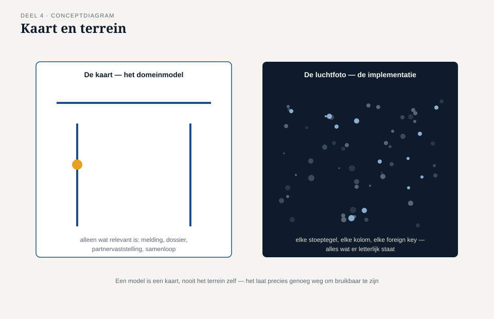
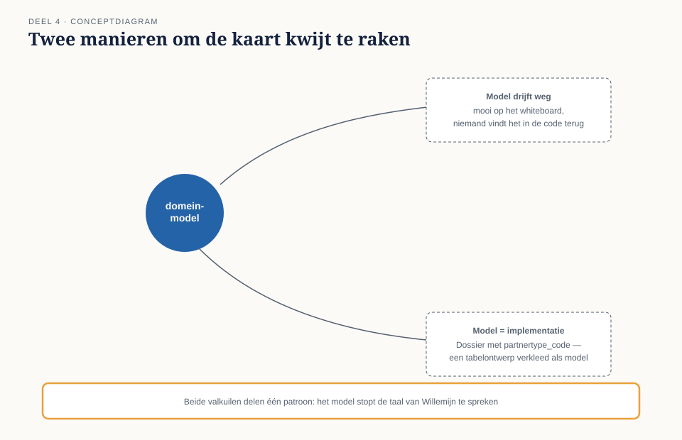
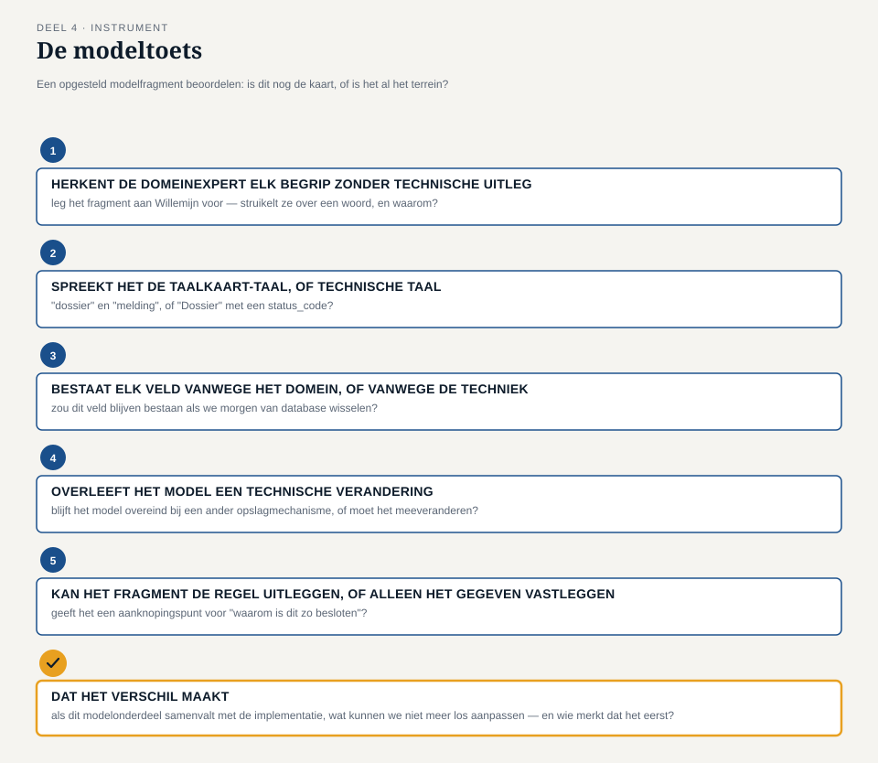

Deel 4 — Het model versus de implementatie: kaart en terrein
Slidedeck · Ductus-cursus Domain-Driven Design · niveau 1 · deel 4 van 30 · 28 slides
Slide 1 — Titel
Domain-Driven Design — deel 4 Het model versus de implementatie: kaart en terrein Niveau 1: fundament · voorbereiding op de iSAQB Advanced-module DDD
Slide 2 — Terugblik deel 1-3
Deel 1: welk onderdeel verdient de investering (complexiteitstoets) Deel 2: welke taal spreken we (taalkaart) Deel 3: wat is kern, wat is ondersteunend of generiek (domeinindeling)
Nu: het team gaat voor het eerst modelleren.
Slide 3 — Een vraag om mee te beginnen
Een team levert een prachtig domeinmodel op. Mooie dozen, duidelijke namen, door de domeinexpert goedgekeurd.
Zes maanden later heeft de code er niets meer mee te maken.
Wat is hier misgegaan — en wanneer begon het?
(Antwoorden op de flap. We komen er aan het eind van dit deel op terug.)
Slide 4 — Waar we het over gaan hebben
- Wat het verschil is tussen een domeinmodel en de implementatie
- De metafoor: kaart en terrein
- Twee manieren om de kaart kwijt te raken
- De modeltoets: is dit nog de kaart, of al het terrein?
Slide 5 — De casus
Het team heeft het kerndomein scherp: vaststellen recht op partnerpensioen. Daan krijgt de opdracht: maak een eerste modelopzet. Hij komt terug met een klassendiagram.
Slide 6 — Daans diagram
Dossier — id, bsn_deelnemer, partnertype_code, status_code
PartnerRecord — foreign key naar Dossier
Mutatie — volgnummer, type_code
“Dat ziet er… bekend uit,” zegt Rutger.
Slide 7 — “Dit is de tabel DOSSIER, overgetypt”
“Ik kan je zo vertellen welke velden je uit welke tabel hebt overgenomen.” — Rutger Zeeman
Slide 8 — Willemijn leest het diagram
“Wat is
partnertype_code?”“En als er twee partners tegelijk zijn?”
“Ik zie een code en een verwijzing. Ik zie niet wat er feitelijk gebeurt.”
Slide 9 — “Dit is niet het model dat we hebben opgebouwd”
“Dit is een tabel met een andere naam erboven.” — Willemijn Brugman
Slide 10 — Tijmens ingreep
“Vertel, zonder naar het diagram te kijken, wat er gebeurt bij samenloop.” Daan vertelt het — feilloos, in gewone taal.
“Teken nu wat je net vertelde. Niet wat er in de tabel staat.”
Slide 11 — Wat een domeinmodel is
Een vereenvoudigde voorstelling van een deel van de werkelijkheid, opgebouwd uit de begrippen en regels die er inhoudelijk toe doen.
Slide 12 — Wat een implementatie is
De technische vorm waarin dat model uiteindelijk wordt gebouwd: klassen, tabellen, velden, foreign keys, framework-conventies.
Slide 13 — De metafoor
Een model is een kaart.
Nooit het terrein zelf.
Een kaart toont straten en een schaal — niet elke stoeptegel. Een goed model toont begrippen en regels — niet elke technische noodzaak.
Slide 14 —

Een kaart naast een luchtfoto van hetzelfde gebied
Slide 15 — Twee manieren om de kaart kwijt te raken
Te ver van de implementatie — mooi op het whiteboard, onbouwbaar in code Al de implementatie — oogt als domeinmodel, is stiekem het tabelontwerp
Daans diagram is de tweede.
Slide 16 —

Twee richtingen naast elkaar — wegdrijvend model, verkleed model
Slide 17 — Drie aanwijzingen in Daans diagram
De namen zijn codes, geen gesprekstaal. Velden bestaan vanwege de techniek, niet vanwege het domein. Het diagram kan de regel niet uitleggen — alleen het gegeven vastleggen.
Slide 18 — De werkvorm van dit deel
De modeltoets
Toetst een modelfragment: is dit nog de kaart, of is het al het terrein?
Slide 19 — De vijf vragen
Herkent de domeinexpert elk begrip zonder technische uitleg? Spreekt het fragment de taalkaart-taal, of technische taal? Bestaat elk veld vanwege een domeinbehoefte of een technische behoefte? Overleeft het model een technische verandering? Kan het fragment de regel uitleggen, of alleen het gegeven vastleggen?
Slide 20 — Veld 6: het veld dat het verschil maakt
Als we dit modelonderdeel laten samenvallen met de implementatie,
wat kunnen we straks niet meer los van elkaar aanpassen —
en wie merkt dat als eerste?
Slide 21 —

Het invulblad — volledig ingevuld voor Daans eerste diagram
Slide 22 — Wat de toets oplevert
partnertype_code — geen taalkaart-term, een databasecode.
De foreign key — techniek, geen domein.
Het diagram legt vast dát er iets is, niet waaróm.
Slide 23 — Rutgers aantekening
“Als het reglement een vierde partnertype krijgt, moet ík een kolom aanpassen voor iets wat Beleid en Actuariaat heeft besloten.”
Slide 24 — Daan tekent opnieuw
Vanuit het verhaal, niet vanuit de tabel DOSSIER.
Partnervaststelling — met ruimte voor meer dan één claim tegelijk.
“Dit lees ik. Dit ken ik.” — Willemijn Brugman
Slide 25 — Rutgers les
“Het probleem was niet dat Daan een technisch model maakte. Het probleem was dat hij het aan óns liet zien alsof het het domeinmodel was.”
Slide 26 — Twee kaarten, één terrein
Het domeinmodel en de implementatie mogen allebei bestaan. Ze zijn gemaakt voor twee verschillende lezers. De modeltoets bewaakt dat ze niet stilletjes samenvallen.
Slide 27 — De module
Voorbereidend op: de relatie tussen model en code (conceptuele klassen versus technisch gemotiveerde bouwstenen) iSAQB Advanced-module DDD
Slide 28 — Volgende keer
Deel 5 — entity en value object: is dit dossier hetzelfde dossier als gisteren, of een nieuw dossier met dezelfde inhoud?